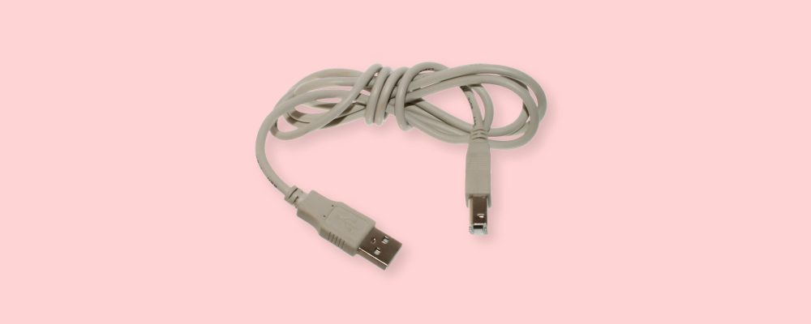

Analog and Digital
Table of contents
We recently got a record player! I am not an audiophile, and our specific record player certainly produces lower quality audio than a speaker playing an MP4, but there is something exciting about seeing your music in a physical form. Seeing your song physically etched in vinyl. Since we got this record player, I’ve been thinking a lot about the difference between these vinyls and this record player and the digital songs I stream. Often times they are the same song, but in such different formats. One is analog and one is digital.
A few weeks after we got the record player, I started reading a book called Introduction to Logic Circuits & Logic Design with Verilog to start learning more about the design of the electronics in a computer. The book explains how complex digital circuits can be designed to build the core components of computers, but before the book jumps in to explaining how the digital components fit together, it explains the difference between analog devices and digital devices.
Given that the record player and digital songs had been on my mind, it was serendipitous that my book began by clarifying the difference between analog and digital devices. Since reading section of the book, I’ve been continually noodling on the definitions of analog and digital and so I’ll share what I’ve learned and how I am thinking about those words.
Signals #
Ultimately, analog record players and digital computers are devices that process signals — the record encodes a song as a signal using grooves in the plastic and the computer encodes information as 1s and 0s with electrical signals. Analog and digital are words that describe different kinds of signals. So in order to get our bearing with these words, we need a solid definition of signals.
In casual conversation, a signal is something that conveys information. Traffic lights are signals that convey directives to drivers — go, slow, stop, turn left. Blinkers in cars are signal that convey information about the direction we intend to drive our car. As kids, we learn about how two lanterns were used as a signal to tell Paul Revere if the British were coming by sea or by land. We use hand signals like a thumb up or a middle finger to convey information to someone else.
This understanding of signals is useful, but it is not specific, and it is not obvious what it would mean for a signal to be digital or analog in this context. We need a more precise definition.
The book I am reading about digital circuit design uses a narrow definition of signals that only relates to electronics: “Signals represent information that is transmitted between devices using an electrical quantity (voltage or current). This works, but it is a bit overfitted to the field of electronics.
I prefer one of the more general definitions provided on the wikipedia page for a signal: “any observable change in a quantity over space or time.” I like this definition for a number of reasons.
I like this definition because it is compatible with the casual usage of the word. We can frame all of the previous examples of signals within this definition. A traffic light is an observable change in the quantities of light (color) over time. Giving someone the middle finger is an observable change in quantities of the location and orientation of a middle finger over time.
But we can also describe many more things as signals using this definition. The change in voltage or current across a wire in a circuit is a signal. The fluctuations in air pressure from vocal chords when we speak become a signal. The changing water level of the tides over the course of the day is a signal. The count of people in the US according to the census that is released every 10 years is a signal.
I also like this definition because it separates the signal from the intention to convey information. When someone signals to you with a thumbs up, they are intentionally trying to convey certain information. When the tide rises and falls every day, the ocean is not trying to convey information, but the water level is a signal all the same.
So now, we’ve got it: Signals are a changing quantified value over time.
Analog and Digital Signals #
Now that we have a solid definition of signal, we can explain what analog and digital mean. Analog and digital are words that allow us to classify signals. Let’s begin by going over the different classes of signal.
A signal has two components, the observable quantified value and the time. We can classify signals according to the different types of values and different type of time.
In one type of signal, time is a continuously changing value. In the example of the tide rising throughout the day as a signal, time is a continuous value. We can go check the tide at any particular moment, wether that be 9:00 AM, 11:00 AM, or 11:00:01.00001 AM. At every instance of time, our signal provides a new observable tidal height.
In another type of signal, time ticks forward from one predefined value to the next. The census is a signal that is only measure every 10 years. As a signal, the population as recorded by the census changes over discrete time, meaning we only observe changes at discrete time intervals. The signal does not observably change at ever more precise times like the tide. You only get a new observable value for the census at specific points in time.
This tells us signals can be classified as continuous-time signals or discrete-time signals.
Another way we can classify our signal is based on the quantified value that is changing over time. This quantified value can either be continuous or discrete.
When the tide changes throughout the day, the height of the tide gradually changes from one value to the next. Each tidal height is a real number. When the tide moves from 1in to 2in, it must move between every real value in between, 1.11 in 1.72 in, 1.99999999 in. This is a continuous-value signal.
On the other hand, the traffic light and the census are discrete-value signals. The traffic light is either red, yellow, or green. The census always counts to a whole number. With these types of signals, the observable value that is changing over time is not continuous. You get one of a specific set of possible values.
Signals can be classified as continuous-value signals or discrete-value signals.
Now that we’ve given ourselves a little classification framework for signals, we can give precise definitions to analog and digital signals. An analog signal is continuous-value continuous-time signal, while a digital signal is a discrete-value discrete-time signal.
Hopefully now, it should be clear that something like AM radio signal, which uses the amplitude of electromagnetic waves as an observable quantified value over time is an analog signal while the electronic signal going through a usb wire with high and low voltage values that are interpreted as 1’s and 0’s at specific intervals is a discrete signal.
Analog and Digital Devices #
Now, that we have semi-solid conceptual footing to stand on with our definitions of analog and digital signals, we can talk about analog and digital devices.
One view of a device is that it is a signal processing machine. It takes a set of input signals transforms them into a set of output signals. With this in mind, an analog device would be a device that transforms analog signals, and a digital device would be a device that transforms digital signals.
Let’s go through some examples.
The record player is an analog device. So we should be able to find an analog signal input, and an analog signal output.
The record player’s input input is the analog signal of the grooves in the vinyl record. A vinyl record has etched groves that vary in width and depth, and as the record spins under the needle, the width and depth become observable continuous-values that change over continuous-time. The record player processes these grooves in the vinyl and transforms them into electrical signals that are given to a speaker. The speaker is another analog device that converts analog electrical signals into sound (analog air pressure signal).
Now let’s take a digital device like a computer. Computers are very complex devices, in fact, each computer is many complex devices, but if we squint hard enough and stretch our imaginations a bit we should be able to identify digital input signals, digital output signals.
Computers typically accept many different input signals, but lets suppose a computer only has a keyboard connected through usb. The keyboard is a device that converts keypresses into a stream of digital 1’s and 0’s sent over the wire. The computer accepts these digital signals and performs a complex operation on them — that operation is determined by the software running on that computer — and outputs a digital signal for output devices like the speaker or the screen. In the case of the computer screen, the computer is outputting a list of digital numbers which indicate the color and brightness of each pixel on the screen.

Observations #
Observation 1: There is a fuzzy line between digital and analog signals.
The more I learned about the analog / digital categorization, the less solid it seems. For one, most digital signals can also be interpreted as an analog signal. The digital high and low voltages sent over the wire in a usb connection are ultimately still continuously changing voltages — we just choose to interpret them as the discrete values 0 and 1 and discrete points in time.
Digital is more of an abstraction over analog than anything else. Signals in the real world are are analog, but we create a digital interpretation and abstraction of those analog signals.
Observation 2: Following from observation 1, we can view a digital device as also being an analog device.
Because digital signals are really just an interpretation of analog signals, the inputs and outputs to your computer could also be viewed as analog signals, and your computer could be viewed as a very complicated analog signal processing device. It would be less intuitive and less illuminating to describe a digital device that way, but you could do it!.
Observation 3: There is something so satisfying about putting a good definition to a word like analog or digital.
I feel like I have a whole new lens to view all the devices around me. This view of a device as a signal processing machine is also a useful way to interpret complex devices. When trying to think about what a computer is and how it works, it is useful to be able to step back and frame the whole thing simply as a digital signal processing device.